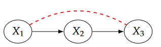
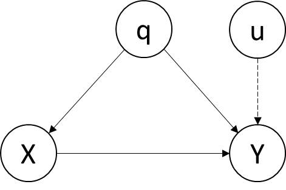
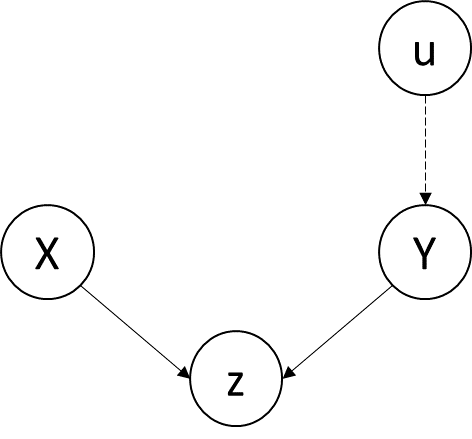
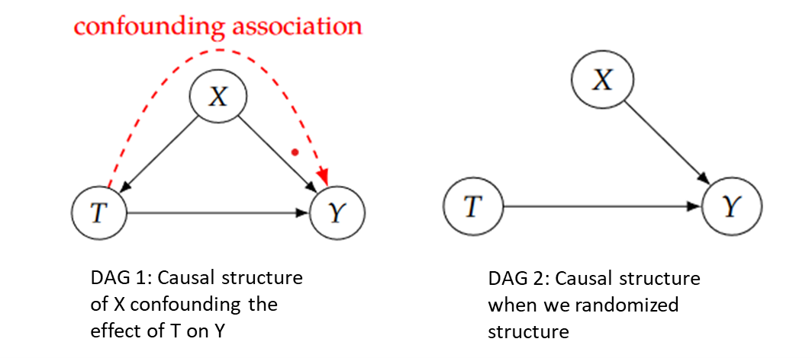
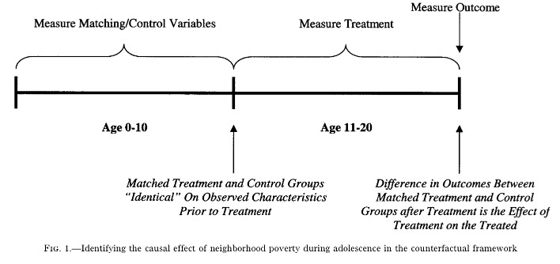

Introduction to Causal Inference
Introduction
What is causal inference?
Cause-and-effect questions: Does X cause Y ? If X causes Y, how large is the effect of X on Y? Is the size of this effect large relative to the effects of other causes of Y? (Morgan and Winship 2014)
- E.g. Did mandatory busing programs in the 1970s increase the school achievement of disadvantaged minority youth? If so, how much of a gain was achieved? (Morgan and Winship 2014)
- E.g. Does obtaining a college degree increase an individual’s labor market earnings? If so, is this particular effect large relative to the earnings gains that could be achieved only through on-the-job training? (Morgan and Winship 2014)
Why is it important?
It is essential to science: If we are choosing between treatments for a disease, we want to choose the treatment that causes the most people to be cured, without causing too many bad side effects. (Neal 2020)
It is essential for rigorous decision-making: We are considering several different policies to implement to reduce greenhouse gas emissions, and we must choose just one due to budget constraints. If we want to be maximally effective, we should carry out causal analysis to determine which policy will cause the largest reduction in emissions. (Neal 2020)
Background
Correlation is not Causation
How wearing shoes to bed and headaches are associated without either being a cause of the other? It turns out that they are both caused by a common cause: drinking the night before. The total association observed can be made up of both confounding association and causal association. It could be the case that wearing shoes to bed does have some small causal effect on waking up with a headache. Then, the total association would not be solely confounding association nor solely causal association. It would be a mixture of both. (Neal 2020)


Directed Acyclic Graph (DAG)
- Definition: A graph is a collection of nodes (also called “vertices”) and edges that connect the nodes. A directed path is a path that consists of directed edges that are all directed in the same direction. If there are no cycles, which are directed paths from some node X back to itself, in a directed graph, the graph is known as a directed acyclic graph (DAG). (Neal 2020)
Causal Chain: In chain graphs, \(X_1\) and \(X_3\) are usually dependent simply because \(X_1\) causes changes in \(X_2\) which then causes changes in \(X_3\). \(X_2\) can be called the mechanism. (Neal 2020)
Controlling for \(X_2\) prevents information about \(X_1\) from getting to \(X_3\) or vice versa. (Pearl 2019) So, we cannot control for \(X_2\) when exploring the causal effect of \(X_1\) on \(X_3\).

Fork (Confounding Junction): Confounding bias occurs when a variable influences both who is selected for the treatment and the outcome of the experiment. In the figure, q is a confounder of X and Y. (Pearl 2019)
Q is a source of omitted variable bias. If we omit q in the regression of Y on X, it will not only pick up the association between X and Y, but also the association between X and Y that flows through q. Therefore, we should control for q when exploring the causal relationship between X and Y.

Collider (M-bias): In a collider graph, The variables X and Y start out independent, so that information about X tells you nothing about Y. But if you control for z, then information starts flowing through the “pipe”, due to the explain-away effect. (Pearl 2019) Therefore, we cannot control for z when exploring the causal relationship between X and Y.

- Fundamental Rule: Controlling for descendants (or proxies) of a variable is like “partially” controlling for the variable itself. Controlling for a descendant of a mediator partly closes the pipe; controlling for a descendant of a collider partly opens the pipe. (Pearl 2019)
The Fundamental Problem of Causal Inference
It is impossible to observe all potential outcomes for a given individual(Rubin 1974), which is defined by Holland as the fundamental problem of causal inference(Holland 1986).
- E.g. You could observe Y(1) by getting a dog and observing your happiness after getting a dog. Alternatively, you could observe Y(0) by not getting a dog and observing your happiness. However, you cannot observe both Y(1) and Y(0), unless you have a time machine that would allow you to go back in time and choose the version of treatment that you didn’t take the first time. (Neal 2020)
Experimental methods
Definition
- The individuals or material investigated, the nature of the treatments or manipulations under study and the measurement procedures used are all selected, in their important features at least, by the investigator. (Cox and Reid 2000)
- E.g. “Treatment group” receives the medicine being evaluated. “Control group” receives a harmless/ineffective substitute (placebo). Each subject is assigned at random to either the treatment or the control condition.
Randomized Controlled Trial (RCT)
This is a type of experiment in which participants are randomly assigned to an intervention group (that receives a treatment or intervention) or a control group (that does not receive the treatment).
- In policy-related RCTs, “treatment” is equal to the exposure to some policy/program (e.g., job training program, income supplement program, sex education program, etc)
Pros and Cons of RCT
Pros: Association is causation. Randomized experiments guarantee that there is no confounding. As the Directed Acyclic Graph (DAG) shows, X is a confounder of the effect of T on Y. Non-causal association flows along the backdoor path T ← X → Y. However, if we randomize T, T no longer has any causal parents. This is because T is purely random. (Neal 2020)

Cons: RCTs may be expensive and time-consuming to implement. Randomization requires implementation of a carefully designed and closely monitored experiment - probably on a small scale (due to cost considerations) and or for a narrowly defined group (due to practical constraints) - which can limit the study’s external validity.
Observational methods
Definition
- In an observational study some of these features, and in particular the allocation of individuals to treatment groups, are outside the investigator’s control. (Cox and Reid 2000)
Quasi-experiment
- We often rely on variation in policy-relevant variables that is “as-if” random since experimental methods are expensive, time-consuming and have external validity problems.
- Quasi-experiments use observational (rather than experimental) data.
- Quasi-experiments tend to “score better” than randomized experiments (but not perfectly) in terms of external validity, less well in terms of internal validity.
Quasi-experimental Method 1: Instrumental Variables
Definition: The information about the movements in X that are uncorrelated with (the error term) is gleaned from one or more additional variables, called instrumental variables or simply instruments. Instrumental variables regression uses these additional variables as tools or “instruments” to isolate the movements in X that are uncorrelated with (the error term)… (Stock and Watson 2020)
Example: (Dee 2004) The authorwas attempting to answer the following question: what is the effect of educational attainment on adults’ civic engagement? The author instrumented for educational attainment (measured in the main analysis via a dummy variable reflecting college entrance) using two arguably exogenous measures of community college availability: proximity to the nearest two-year college and the number of two-year colleges in one’s county of residence. The results suggest that educational attainment has large and statistically significant effects on subsequent voter participation and support for free speech.
Quasi-experimental Method 2: Regression Discontinuity
Definition: For some programs, there is a clear eligibility threshold (cutoff): if you are below (above) that threshold, you qualify for the program and, if you are above (below) the threshold, you don’t. RD takes advantage of the cutoff. As long as the only thing that changes at the cutoff is that the person gets the treatment, then any jump up or down in the dependent variable at the cutoff will reflect the causal effect of treatment. (Bailey 2019)


Example: (Gormley and Gayer 2005) The author explores the effect of Oklahoma’s universal pre-kindergarten (pre-K) program for four-year-olds on children’s test scores in Tulsa Public Schools. The author uses a regression-discontinuity approach that contrasts the performance in the test of children born just before the cut-off date (the treatment group) to the performance of children born just after the cut-off date (the control group), at the same time controlling for continuous age effects.


Quasi-experimental Method 3: Difference in Difference
Definition: To control for systematic differences between the control and treatment groups, we need two years of data, one before the policy change and one after the change. Thus, our sample is usefully broken into four groups: the control group before the change, the control group after the change, the treatment group before the change, and the treatment group after the change. (Wooldridge 2016) By having two before-after comparisons, we create a much stronger study: a difference-in-difference study. The study gets its name from the fact that it compares the differences between two before-after differences. (Remler and Van Ryzin 2015)
Average Outcome Before After Difference No Treatment A B B-A Treatment C D D-C Difference C-A D-B ((D-C)-(B-A))=((D-B)-(C-A))
- Example: (Eissa and Liebman 1996) This paper examines the impact of the Tax Reform Act of 1986 (TRA86) on the labor force participation and hours of work of single women with children. This paper uses all single women with children as the control group. The difference between the change in labor force participation of single women with children and the change of single women without children is the estimate of the effect of TRA886 on participation. This is essentially the difference-in-differences approach.
Quasi-experimental Method 4: Fixed Effects
Definition: If we include fixed effects in our regression model, we are controlling for every single fixed characteristic of every single member of our sample, including characteristics for which we don’t even have data.
Example: (Waldfogel 1997) This paper is trying to answer the question: Does having children affect the wages of women in the United States? If women with lower motivation to succeed in the labor market are more likely to have children and less likely to have high earnings, then this unobserved heterogeneity might explain the observed negative relationship of wages and having children. The author controls for this heterogeneity via fixed effects and first-differences models.
Quasi-experimental Method 5: Propensity Score Matching
Definition: Assume that we want to measure the effect of some policy “treatment,” but that people aren’t randomly assigned to this treatment. We could address selection bias by accounting for observed characteristics that are part of the “selection process” via stratification or multiple regression or use same set of variables to model the selection process explicitly, which is the approach taken by propensity score matching.
Example: (Harding 2003) This paper is trying to explore the effect of growing up in a high-poverty neighborhood on the probability of dropping out of high school or of experiencing a teenage pregnancy. Author uses propensity score to match each treated subject with one or more control subjects such that the treated subjects are, on average, identical to the control subjects on observable characteristics prior to treatment, and then compares individuals growing up in poor and nonpoor neighborhoods (treatment and comparison groups), who are otherwise identical on observable characteristics.

Conclusion
In conclusion, causal inference is a fundamental concept in research and is critical for making informed decisions in fields such as medicine, economics, and public policy. To establish causality, researchers can use both experimental and observational methods.
While experimental methods are considered the gold standard for establishing causality, they may not always be feasible or ethical.
Observational methods can be a valuable alternative, but they have limitations and cannot establish causality with the same degree of certainty as experimental methods.
- To overcome the limitations of observational methods, researchers can use advanced techniques such as instrumental variables, regression discontinuity, difference-in-differences, fixed effect and propensity score matching. These methods can help identify causal effects in observational studies, but they also have limitations and require careful consideration of assumptions and potential sources of bias.